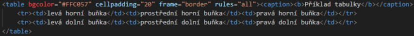

Tabulku ohraničuje tag <table>. Mezi jeho hlavní atributy patří "align" (left/right/center), "width" (šířka), "height" (výška), "bgcolor" (barva pozadí), "bordercolor" (barva rámečku), "frame" (rámeček), "rules" (mřížka), "cellpadding" (vnitřní okraj buněk), "cellspacing" (vnější okraj buněk), "border" (velikost rámečku). Cellpadding, cellspacing a border se udává v pixelech.
Taulka se dá rozdělit tagy <thead>, <tbody> a <tfoot> na hlavičku, tělo a patičku tabulky. Toto dělení je zbytečné, pokud nepotřebujete v taulce hlavičku nebo patičku. Užitečnější může být tag "caption" (v podstatě nadpis tabulky).
Tag <tr> tvoří řádek tabulky. Do něj se vkládají jednotlivé buňky tagem <td> nebo <th> když se jedná o hlavičku. Buňky mají atributy "align" = horizontální zarovnání (hodnoty: left, right, center, justify), "valign" = vertikální zarovnání (top, middle, bottom, baseline), "width" (šířka), "height" (výška), "bgcolor" (barva pozadí) a několik dalších kosmetických atributů.
Příklad jednoduché tabulky by vypadal třeba takto:

| levá horní buňka | prostřední horní buňka | pravá horní buňka |
| levá dolní buňka | prostřední dolní buňka | pravá dolní buňka |
Seznam odrážek se obvykle uzavírá tagy <ul> (odrážkový seznam) nebo <ol> (číslovaný seznam). Jednotlivé odrážky se zapisují mezi párový tag <li>. Jeho atributy jsou "type" a "value". Hodnotou atributu "type" je:
Odkazy se uzavírají do tagu <a>. Jejich hlavním atributem je "href", který určuje cíl odkazu v podobě URL adresy. Odkaz lze také použít k přesunutí na určitý bod na stránce pomocí atributu "name". Na místo kam chcete přesunout vložíte tag <a name=název> <a/> a do odkazu na toto místo vložíta namísto URL adresy název <a href=název> <a/>.